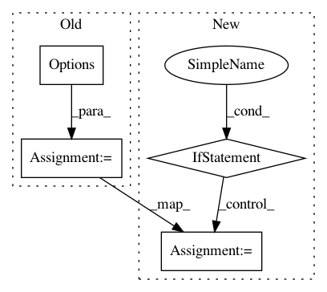

a56077ccaaccab72728d1254895ddb6104361f27,ilastik/widgets/massFileLoader.py,MassFileLoader,handleDirectoryButtonClicked,#MassFileLoader#,34
Before Change
self.filenames = glob.glob(os.path.join(directory, pattern))
def handleDirectoryButtonClicked(self):
options = QFileDialog.Options(QFileDialog.DontUseNativeDialog)
directoryName = QFileDialog.getExistingDirectory(self,
"Base Directory",
self.defaultDirectory,
options=options)
After Change
def handleDirectoryButtonClicked(self):
options = QFileDialog.Options()
if ilastik_config.getboolean("ilastik", "debug"):
options |= QFileDialog.DontUseNativeDialog
directoryName = QFileDialog.getExistingDirectory(self,
"Base Directory",
self.defaultDirectory,
options=options)
In pattern: SUPERPATTERN
Frequency: 3
Non-data size: 4
Instances
Project Name: ilastik/ilastik
Commit Name: a56077ccaaccab72728d1254895ddb6104361f27
Time: 2013-04-10
Author: ullrich.koethe@iwr.uni-heidelberg.de
File Name: ilastik/widgets/massFileLoader.py
Class Name: MassFileLoader
Method Name: handleDirectoryButtonClicked
Project Name: ilastik/ilastik
Commit Name: e893cb446a8607da202be10714f76a9a41f72710
Time: 2013-11-19
Author: burcin@erocal.org
File Name: ilastik/applets/dataSelection/dataSelectionGui.py
Class Name: DataSelectionGui
Method Name: getImageFileNamesToOpen
Project Name: yahoo/TensorFlowOnSpark
Commit Name: 01569e73dffe4315bee627906abf2f01b1d860e5
Time: 2019-12-02
Author: leewyang@verizonmedia.com
File Name: examples/mnist/keras/mnist_tf_ds.py
Class Name:
Method Name: main_fun